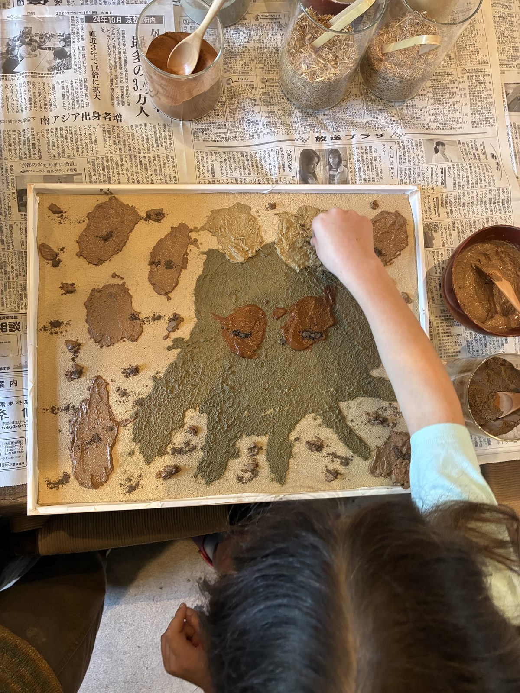
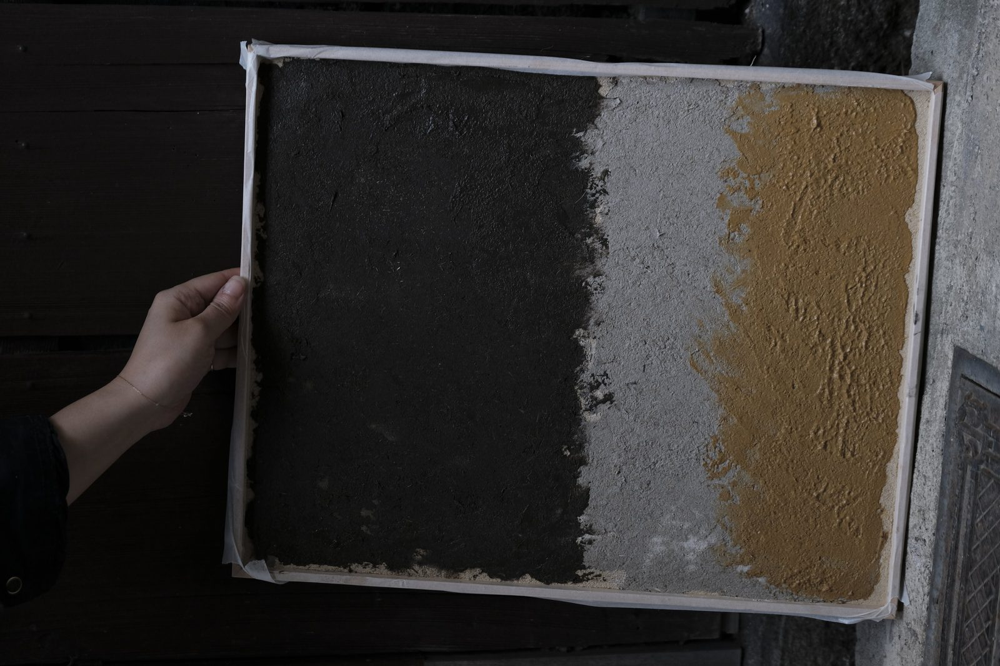
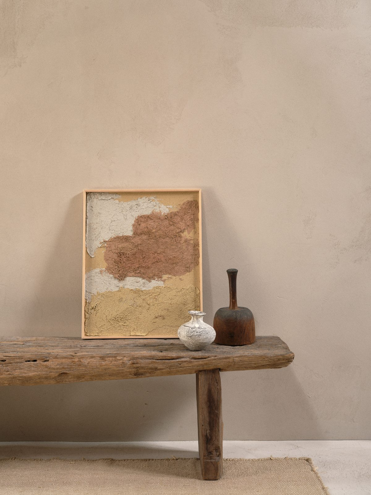
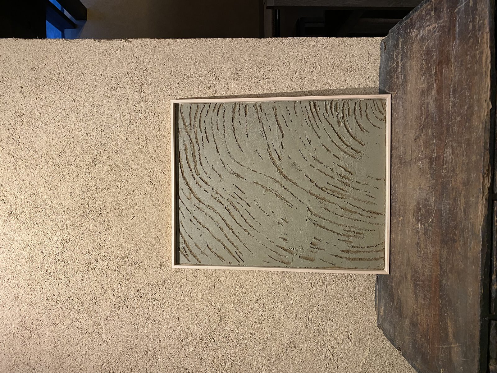
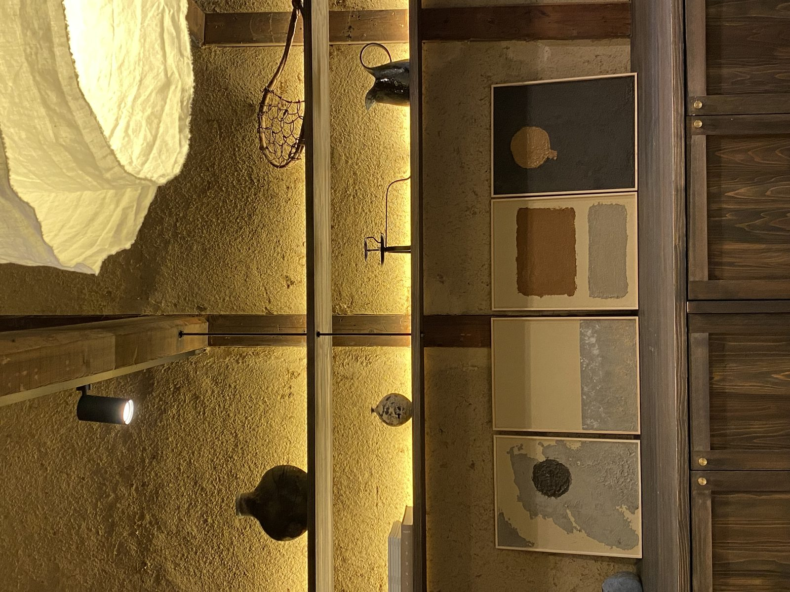
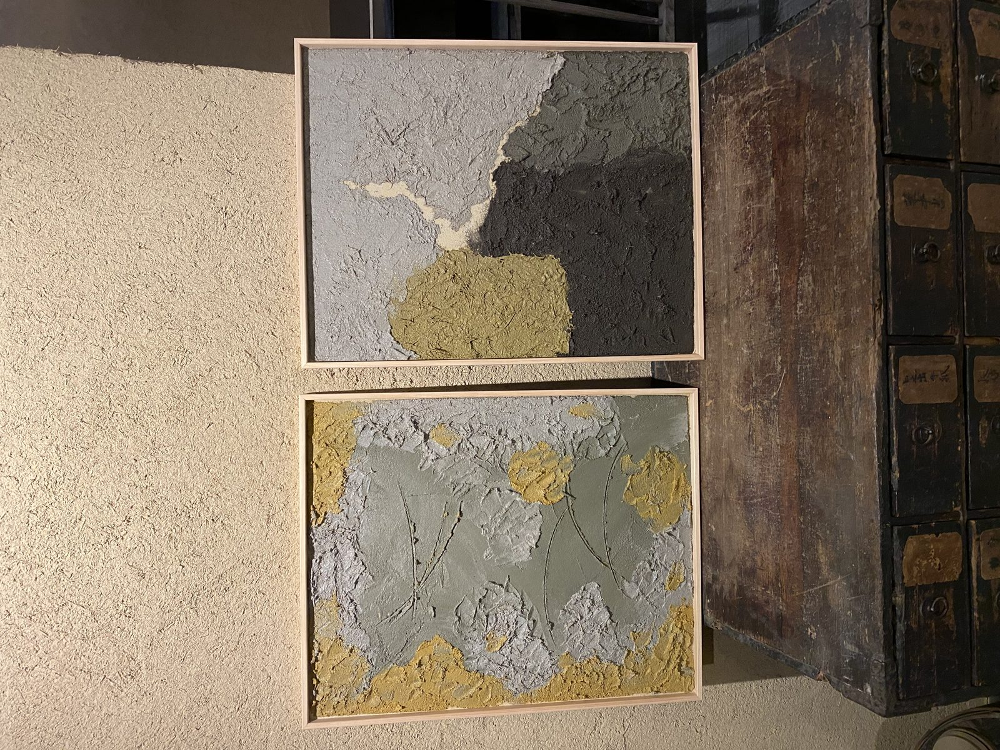
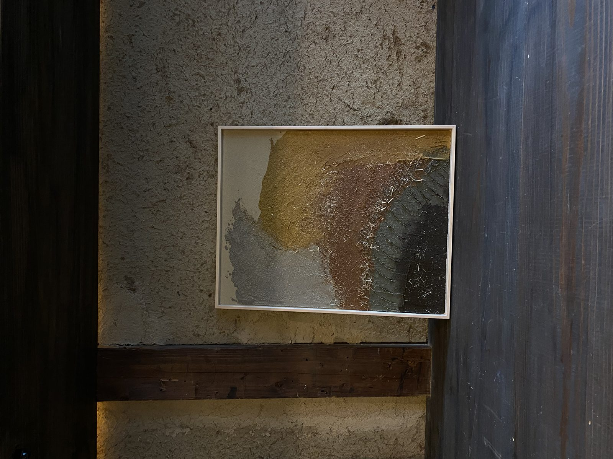

i.
Welcome tea
A seasonal cup of tea on arrival, and an introduction to fermentation across Japan.
Make your own Japanese kitchen condiments from koji-fermented rice — the quiet engine of every umami flavour.
Miso, shoyu, mirin, pickles — the staples of the Japanese table, all built on a single quiet foundation: koji, the national mould of Japan. Inoculated onto rice, barley, or soy, koji is the starter that turns ingredients into the fermented umami the islands are known for.
In this workshop, you'll learn the spectrum of fermentation styles across Japan and koji's vital role — then make two personalized condiments for your own pantry: shoyu-koji rich with dried fruit, or shio-koji with aromatic spices.
You leave with two jars of your own fermented condiments — ready to settle and finish on your kitchen counter at home.
Shoyu-koji + shio-koji, made with the koji of your choice and seasonal aromatics. Yours to keep.
Your jars are nearly there — they continue fermenting at home for 5–7 days, then keep in the fridge.
One spoonful turns a bowl of rice, a piece of fish, or a dressing into something quietly transformed.
A quiet 2 hours at the atelier — guided, unhurried, made for arriving without a plan.
A seasonal cup of tea on arrival, and an introduction to fermentation across Japan.
Smell, touch, and taste rice koji — the starter that drives miso, soy sauce, and saké.
Combine koji with salt, soy, dried fruit, or aromatics — your choice of shoyu-koji or shio-koji.
Spoon your blend into a jar to finish at home. Labelled, packed, ready to travel.
Guests come for an afternoon and leave with a panel — and, more often than not, a few words about what surprised them.
I expected a craft class. I left with a small piece of Kyoto I now look at every morning, and a much quieter mind than when I arrived.
The teacher took it slow. By the time we were finishing the panel I'd forgotten about my phone, my flight, all of it. The smell of the clay was the best part.
It travelled home flat in my carry-on and now hangs above my desk. People always ask what it is — that's a fun conversation.












Kyoto runs at half-speed. Temple bells in the early hours. Shop curtains drifting at noon. The river quiet by dusk. The seasons change without asking permission — cherry, plum, maple, snow.
You arrive at Maana Atelier on a small street in Nishijin, the old weavers' district. Inside, the machiya keeps its own air: cool stone, soft daylight, the smell of clay.
A workshop is one afternoon. The city gives you the rest.